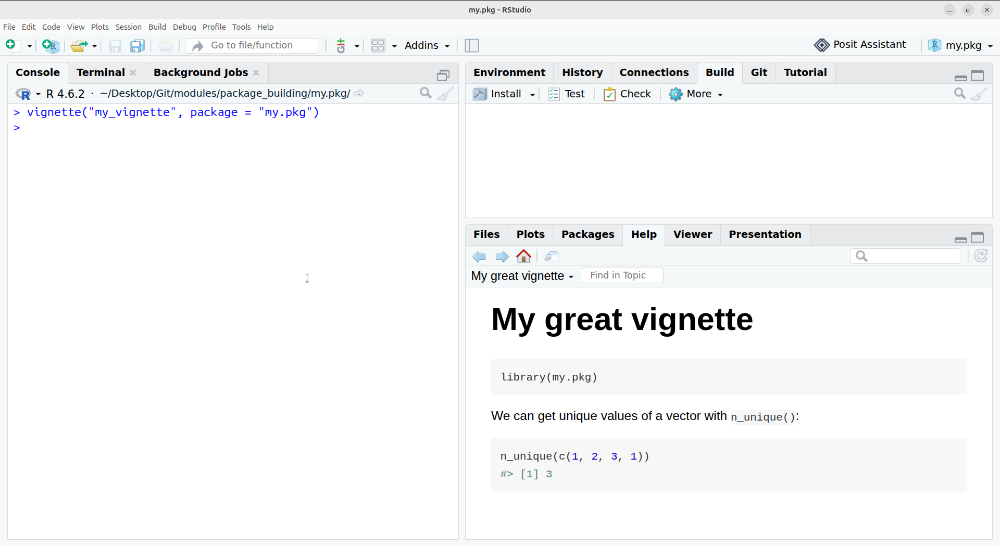

We now know the basics of a package: how to create one, document it, and test it. But there are plenty of choices to make when developing a package, such as:
how should I name my functions?
what dependencies should my package have?
should I add support for popular plotting packages?
In this section, we are going to cover some of these questions and define some good practices when developing a package.
Namespace
Namespace conflicts
As seen in the first section, the NAMESPACE file contains the list of functions that your package exports. When someone loads your package with library(my.pkg), all exported functions will be imported in the environment.
In the likely scenario where this user loads several packages, there can be a namespace conflict if two packages (or more) provide two functions with the same name. It is also possible that some of your functions have the same name as functions included by default in R. For example, dplyr overwrites several functions:
library(dplyr)## Attaching package: ‘dplyr’#### The following object are masked from ‘package:stats’:## ## filter, lag#### The following objects are masked from ‘package:base’:## ## intersect, setdiff, setequal, union
While some tools are available on the user’s side to fix such conflicts (e.g see the package conflicted), it is good practice to try to avoid them. In particular, you should be very careful that your functions don’t have the same names as other functions in popular packages (e.g data.table, tidyverse packages, etc.).
TipHow do I know if a function name is already used?
The package pkgcheck allows us to quickly check whether a function name is already provided by a package on CRAN. For instance, filter() is exported by multiple packages:
In certain cases, we can address namespace conflicts by using S3 methods. This is the mechanism that allows R users to call summary() or plot() on a lot of different objects while not having namespace conflicts.
A function like summary() is called an S3 generic. When we first call this function, it gets dispatched to one of the existing S3 methods based on the class of the first input (in this case, object). For instance, let’s make a linear regression and store its output in res:
res <-lm(mpg ~ cyl, data = mtcars)class(res)
[1] "lm"
As we can see, res is an object of class "lm". When I call summary(res), summary() will see that class and look for the method summary.lm() (more generally, it will look for the method summary.<class>()). In this case, summary.lm is implemented in base R:
Packages can also provide their own methods for existing generics! For instance, in our package, we could have our functions return objects of class "my.class" and define a custom summary.my.class() so that we could simply call summary() on our objects.
TipVisualising S3 dispatch
The package sloop allows us to see how S3 dispatch works:
sloop::s3_dispatch(summary(res))
=> summary.lm
* summary.default
In this case, our call to summary(res) found two relevant methods: summary.lm() is the one that is called, and summary.default() is the one that would have been used as fallback if there were no summary.lm().
Implementing methods for well-known generics such as summary(), plot(), mean(), quantile(), and many others, is a good way to reduce namespace conflicts while ensuring a good user experience.
NoteHow do I know which functions are generic?
You can check whether a function is generic by printing it in the console, as it will call UseMethod() internally:
Another way to know this is to use sloop::is_s3_generic():
> sloop::is_s3_generic("quantile")[1] TRUE
Dependencies
To take or not to take dependencies
When we develop a package, we can import other packages, either because they provide essential features or simply because they make the development process easier. These packages are now dependencies of our package, meaning that our package can be affected if any of these packages has some issues.
The topic of dependencies is very important in software in general, not just in R packages. Taking dependencies is a tradeoff.
On one hand, we can rely on the work and experience of others to use features that would be hard and/or time-consuming to implement ourselves. Splitting functionalities across packages can also be a good thing since each package can focus on some particular aspects instead of being a collection of hundreds of functions that is harder to properly document and test. It is also important to keep in mind that not all dependencies are equal. Depending on a small package that does one thing very well and that is actively maintained is often better than reinventing the wheel (maybe with a worse implementation) in our package.
On the other hand, dependencies can make our package more fragile because changes in these dependencies also affect your package. For example, if a package that we depend on changes their function and argument names, then we need to update our package to take this into account, otherwise our code would break. This kind of changes is called breaking changes.
There are more aspects to consider when deciding whether to depend on other packages, and these are nicely summarised in this blog post.
This might seem a bit abstract, so let’s see a concrete example.
NoteAbout software security
Whether to use external dependencies can be particularly important in terms of software security, but this is not our focus here. If you want to learn more about this topic, search for software supply chain.
An example
Suppose that for some reason, our package uses the function select_vars() from the package dplyr. This function was removed in dplyr v.1.1.0, which has implications for users of our package:
if their version of dplyr is < 1.1.0, it still works fine;
if their version of dplyr is >= 1.1.0, then the function in your package that uses select_vars() will error.
In this case, we could replace select_vars() by another function and indicate that the version of dplyr must be greater than or equal to 1.1.0, so that users would at least know why this function fails if they don’t have a supported version.
Having dependencies forces us to stay aware of changes in these dependencies, and this increases the maintenance burden.
How to use dependencies
Information on dependencies is kept in DESCRIPTION. We can list dependencies in two fields: Imports or Suggests.
Adding a package in Imports signals that it has to be present on the user’s machine for our package to work. Therefore, this dependency will be installed whenever a user installs our package.
Adding a package in Suggests signals that some functionalities of our package require this dependency but it is not essential. For instance, testthat could be listed here because it is required for testing but not having it installed doesn’t change anything for the end user of our package. Dependencies listed in Suggests will not be installed automatically when a user installs our package.
We can either add a dependency by hand, or use usethis::use_package() to add it automatically. For example, if we choose to put dplyr and sf in Imports, and testthat in Suggests, then our DESCRIPTION file will look like this:
As you can see, we can also specify minimum version requirements for our dependencies. Going back to our example with dplyr above, in addition to making the necessary fixes to handle breaking changes in dplyr 1.1.0, we should specify that dplyr (>= 1.1.0) is required in our package.
There are several ways to use dependencies in our code:
using ::, for instance dplyr::select();
importing a specific function by putting #' @importFrom dplyr select in the function documentation and then calling devtools::document(). This will add importFrom(dplyr, select) in NAMESPACE, meaning that we can use select() directly in our code.
Note that if a package is in Suggests, then we need to check whether it is installed before calling it in our code. For instance, if our function depends on a function from the package foo, we can check its presence with:
my_fun <-function(a, b) {if (!requireNamespace("foo", quietly =TRUE)) {stop("Package \"foo\" must be installed to use this function.",call. =FALSE ) }# code that includes calls such as foo::some_function()}
Reverse dependencies
So far, our focus was on dependencies, i.e. packages that we depend on. If our package becomes useful enough, then maybe other developers will choose to depend on it. Packages that depend on our package are called “reverse dependencies”.
This means that any change we make to our package might affect other packages. It is good practice to check these reverse dependencies before releasing a new version of our package:
if we don’t find any new failure in these reverse dependencies, then we know that our new version won’t break them;
if we find new failures then we should notify the maintainers of these dependencies. If the failures are not too big, we can also submit a patch ourselves, but this is not mandatory. In general, we should give these maintainers a couple of weeks notice before releasing our new version.
We can use the package revdepcheck to run reverse dependency checks.
NoteHow do reverse dependency checks work?
When we check reverse dependencies, we want to ensure that our changes do not cause new failures. A reverse dependency might already have failing tests which are not related to our changes.
Tools to check reverse dependencies will install the latest version of our package and its development version (where we made new changes) and run the test suite of each reverse dependency with both versions. A failure happening only when the development version of our package is used means that our changes cause reverse dependency failures.
Note that if we eventually publish our package on CRAN (cf. next section), then the CRAN team will automatically run reverse dependency checks when we submit a new version. Failures in reverse dependencies will only be tolerated if we have notified maintainers in advance.
More documentation
So far, our documentation provides indications on what a specific function does and how to use it. A package can consist of a collection of unrelated functions, in which case this kind of documentation might be sufficient.
However, a package can also be designed so that functions play particularly well together. In this case, we would like to provide more general documentation that describes the optimal workflow when using this package. In addition to documentation in the man folder, we can also store long-form documentation in the vignettes folder. A vignette
As before, we can use usethis to create a vignette and generate the surrounding infrastructure:
> usethis::use_vignette("my_vignette")✔ Adding knitr to Suggests field in DESCRIPTION.✔ Adding "inst/doc" to .gitignore.✔ Adding rmarkdown to Suggests field in DESCRIPTION.✔ Adding "knitr" to VignetteBuilder.✔ Creating vignettes/.✔ Adding "*.html" and "*.R" to vignettes/.gitignore.✔ Writing vignettes/my_vignette.Rmd.☐ Modify vignettes/my_vignette.Rmd.
This is an R Markdown document, which is why usethis automatically added the packages knitr and rmarkdown to the Suggests section of DESCRIPTION. We can now add content to this vignette:
---- title: "my_vignette"+ title: "My great vignette"output: rmarkdown::html_vignettevignette: >- %\VignetteIndexEntry{my_vignette}+ %\VignetteIndexEntry{My great vignette} %\VignetteEngine{knitr::rmarkdown} %\VignetteEncoding{UTF-8}---```{r, include = FALSE}knitr::opts_chunk$set( collapse = TRUE, comment = "#>")``````{r setup}library(my.pkg)```+ We can get unique values of a vector with `n_unique()`:+ + ```{r}+ n_unique(c(1, 2, 3, 1))+ ```
There are then multiple ways to view this vignette. One of them is to use rmarkdown::render() or the “Render” button in RStudio. Another approach is to install the package and to build the vignettes locally with devtools::install(build_vignettes = TRUE). Once this is done, we can browse vignettes of our package with browseVignettes("my.pkg"), or view this one specifically with vignette("my_vignette", package = "my.pkg"):

Finally, you can also build a vignette using devtools::build_rmd("vignettes/my_vignette.Rmd"). Note that this will temporarily install the package, so that the code in the vignette always includes the latest changes you may have made locally.